PiPER는 6자유도 경량 로봇팔입니다. CAN으로 통신하며, Windows 프로그램 · Python SDK · ROS1 · ROS2로 제어할 수 있습니다.
제어 소프트웨어
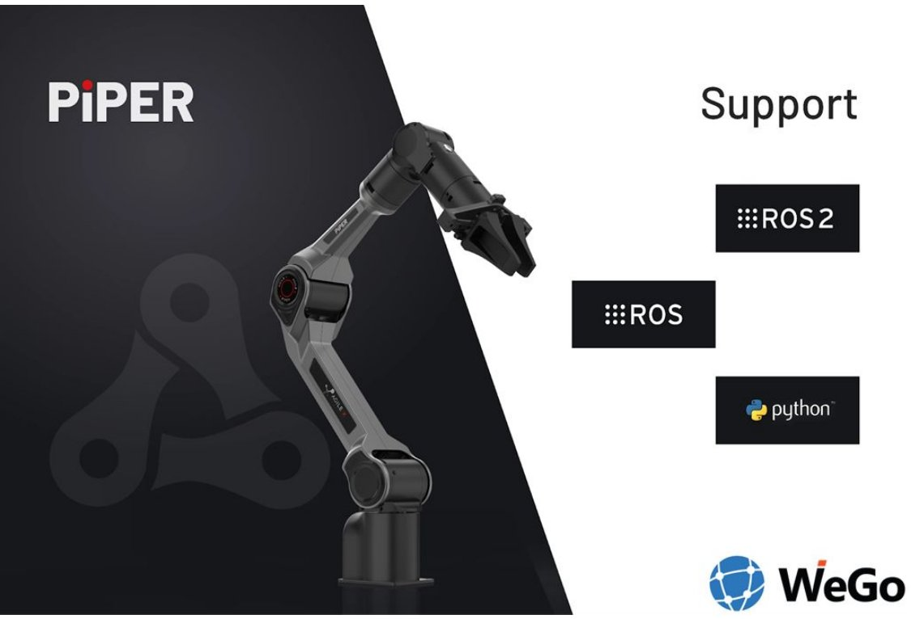
그림 1. PiPER와 지원 소프트웨어 (AgileX 자료)
소프트웨어
설명
ArmRobotUA (Windows)
PiPER의 주요 기능을 살펴보고 시험 삼아 써 볼 수 있습니다 (3장).
Python SDK
Python으로 개발 · 통합할 때 쓰는 개발 도구입니다 (7장).
ROS1
Ubuntu 20.04 이하에서 쓰는 ROS로, Noetic 버전을 권장합니다 (8장).
ROS2
Ubuntu 20.04 이상에서 쓰는 ROS로, Humble 버전을 권장합니다 (9장).
사양 · 구성품 · 연결
사양, 구성품, 전기 패널과 항공 커넥터, 설치와 첫 전원 투입은 AgileX PiPER 운용 설명서 1 · 3 · 5 · 6장에 있습니다 (AgileX 공식 사용 설명서를 옮긴 책).
이 가이드는 그다음, PiPER를 처음 움직여 보고 개발하는 순서를 다룹니다.
주의 · 관절 동작 범위
관절 동작 범위를 넘는 각도로 움직이면 모터가 비상 정지 모드로 들어가 갑자기 멈출 수 있고, 설정된 영점이 어긋날 수 있습니다. 동작 범위(운용 설명서 1장) 안에서 쓰십시오.
CHAPTER02
중요 안전 수칙
아래는 이 가이드의 각 장에 나오는 경고와 주의를 한곳에 모은 것입니다. PiPER를 움직이기 전에 읽으십시오.
경고 · Disable하면 팔이 떨어집니다
Enable · Disable은 모터 전력 공급을 제어합니다. Disable하면 로봇팔이 수직으로 떨어집니다. 팔을 받치거나 영점에 둔 상태에서 Disable하십시오 (3장).
경고 · 비상 정지 없이 전원을 끄지 마십시오
비상 정지 스크립트를 실행하지 않고 전원을 끄거나 emergency_restore 스크립트를 실행하면 PiPER가 빠른 속도로 하강해 제품이 파손될 수 있습니다 (7장).
경고 · 캘리브레이션 중 J5
J5 모터를 캘리브레이션하려고 Disable하면 토크가 풀려 팔이 부딪칠 수 있습니다. 모터를 손으로 받친 뒤 캘리브레이션하십시오 (5장).
주의 · 관절 동작 범위
동작 범위를 넘는 각도로 움직이면 모터가 비상 정지 모드로 들어가 갑자기 멈추고, 영점이 어긋날 수 있습니다 (동작 범위는 운용 설명서 1장).
주의 · Reset 전에 그리퍼 방향 확인
Reset을 누르면 팔이 지금 위치에서 가장 가까운 방향으로 영점에 돌아갑니다. 그리퍼의 카메라 부착 부분이 위를 향하지 않으면 그리퍼 케이블이 끊어질 수 있습니다 (3장).
주의 · 처음에는 느리게
처음에는 속도 20 %로 움직이고, 마우스를 언제나 E-STOP 근처에 두십시오. E-STOP을 누르면 로봇팔이 그 자리에서 천천히 내려갑니다 (3장).
주의 · 펌웨어 버전이 다른 팔끼리 연결
1.X.X 버전과 2.0.0 이상 버전을 텔레오퍼레이션으로 연결하면 동작이 불안정하거나 튈 수 있습니다. 1.X.X 기기는 먼저 1.8.2로 업데이트하십시오 (6장).
CHAPTER03
ArmRobotUA로 시작하기
ArmRobotUA는 PiPER를 PC에서 바로 움직여 볼 수 있는 Windows 프로그램입니다. 연결, 활성화, 네 가지 모션 명령, 궤적 만들기와 안전한 종료까지 순서대로 설명합니다. 화면의 기능 영역별 설명과 관절 · 로봇팔 상태 표시는 PiPER 운용 설명서 8장을 보십시오.
화면 구성
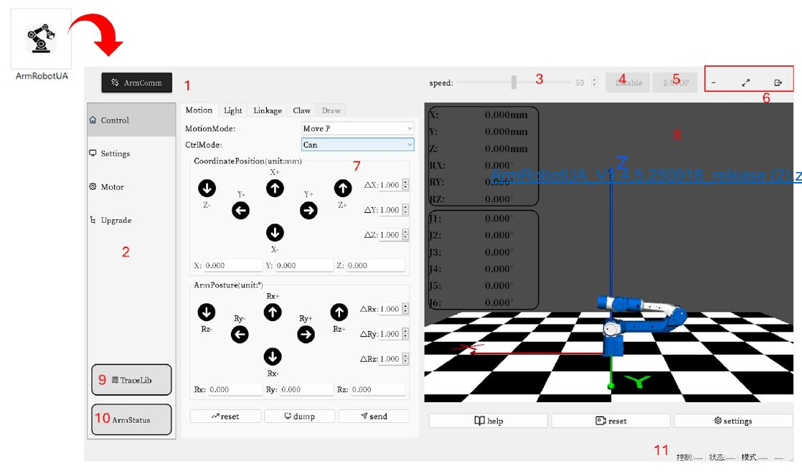
그림 2. ArmRobotUA 화면 (ArmRobotUA_V1.4.5.250918)
표 1. ArmRobotUA 화면 구성
No.
항목
No.
항목
1
유 · 무선 통신 활성화 버튼
7
PiPER 구동 모드 및 함수
2
메뉴 사이드바
8
3D 시뮬레이션 모델
3
속도 비율(0–100) 설정
9
궤적 라이브러리 관리창
4
활성화 / 비활성화 버튼
10
PiPER 세부 상태창
5
비상 정지 / 복구 버튼
11
PiPER 기본 상태창
6
창 크기 조정 및 닫기 버튼
연결과 활성화
CAN 통신을 활성화합니다.좌측 상단 메뉴에서 ArmComm을 클릭한 뒤 Connect를 누릅니다.
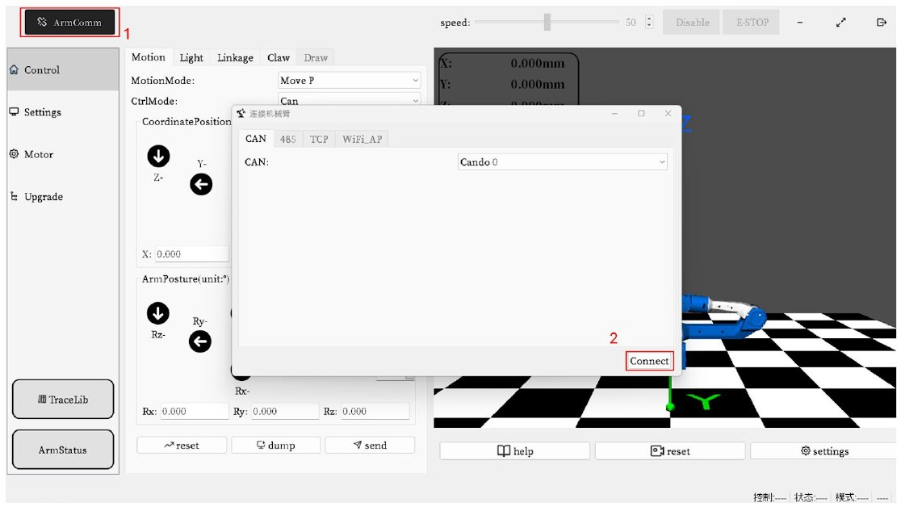
그림 3. ArmComm → Connect
언어를 영어로 바꿉니다.언어 설정에서 중국어를 영어로 변경합니다.
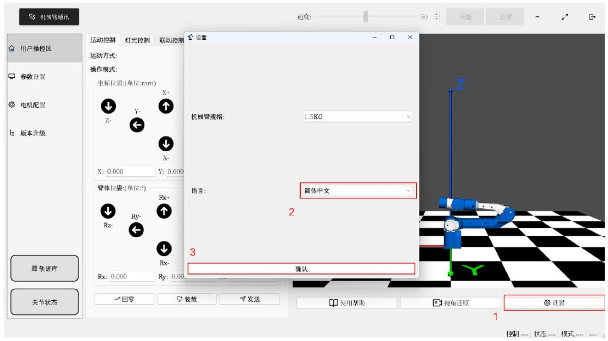
그림 4. 언어 설정
로봇팔을 영점 가까이에 둡니다.왼쪽 사진처럼 팔이 중력에 넘어지지 않게 둡니다. 전원을 넣고 처음 쓰면 팔이 오른쪽 사진의 자세로 움직이며, 이 위치가 영점입니다.
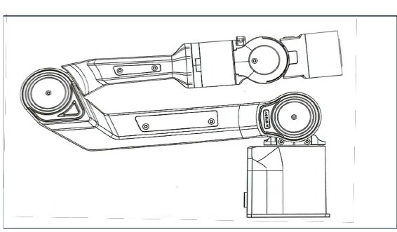
그림 5. 시작 자세
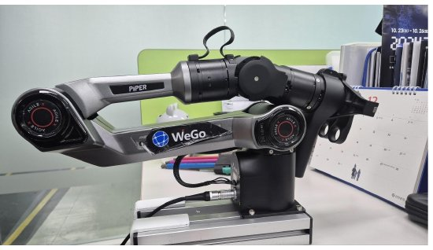
그림 6. 영점
E-STOP을 누른 뒤 Restore를 누릅니다.E-STOP을 누르면 로봇팔이 그 자리에서 아래로 천천히 내려갑니다. 긴급한 상황에 씁니다.
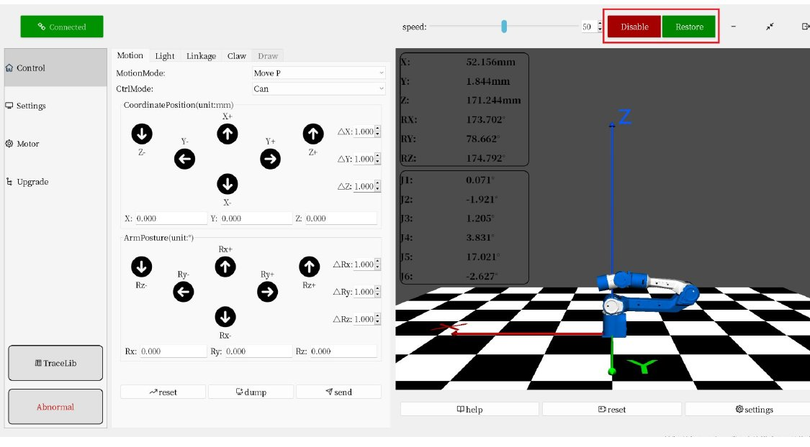
그림 7. E-STOP과 Restore
그리퍼 종류를 확인합니다.그리퍼가 없으면 a) Two Finger Gripper로 간주합니다. b) Velcro Gripper(티칭 그리퍼)는 Master로 설정해 Slave에게 동작을 가르칠 때 씁니다.
그리퍼 종류와 관계없이 이 프로그램으로 제어하려면 Slave(Servant) 모드로 바꿔야 합니다.
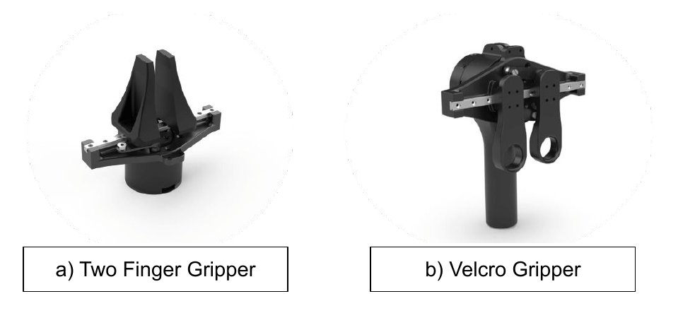
그림 8. a) Two Finger Gripper · b) Velcro Gripper
그리퍼 방향을 확인합니다.그리퍼의 카메라 부착 부분이 위를 향해야 합니다. 그렇지 않으면 영점으로 돌아갈 때 그리퍼 케이블이 끊어질 수 있습니다.
팔은 지금 위치에서 가장 가까운 방향으로 영점에 돌아가므로, Reset을 누르기 전에 매번 확인하십시오.
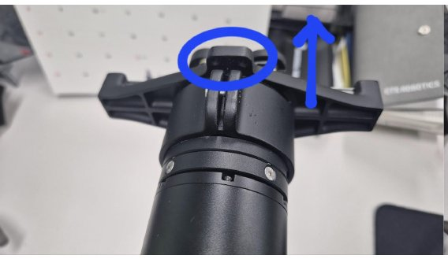
그림 9. 올바른 그리퍼 방향
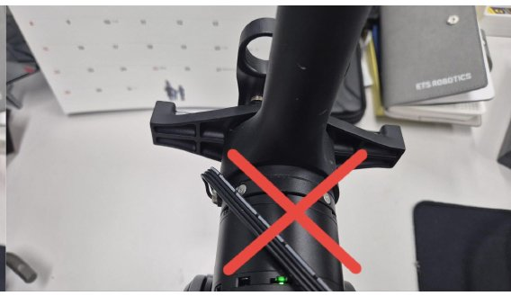
그림 10. 잘못된 그리퍼 방향
Servant 모드로 설정합니다.상단 바에서 Linkage로 이동해 SettingInstruction을 Servant로 설정합니다. Master는 두 대 이상의 로봇팔을 Master & Slave로 구성할 때 씁니다.
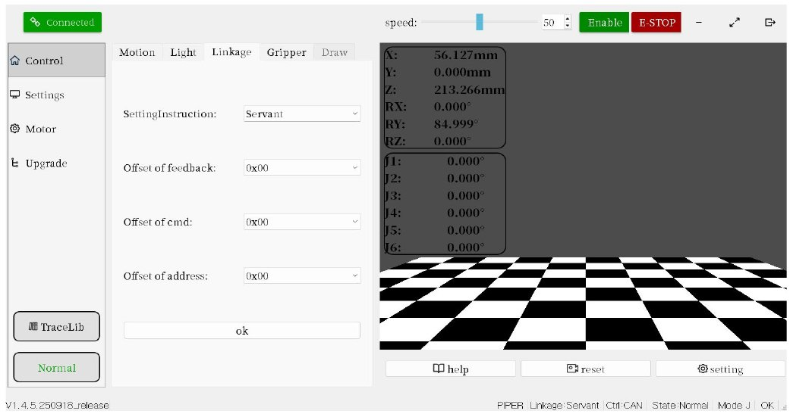
그림 11. Linkage → SettingInstruction
Enable을 눌러 활성화합니다.Enable · Disable은 전력 공급을 제어합니다. Disable하면 로봇팔이 수직으로 떨어지니 주의하십시오.
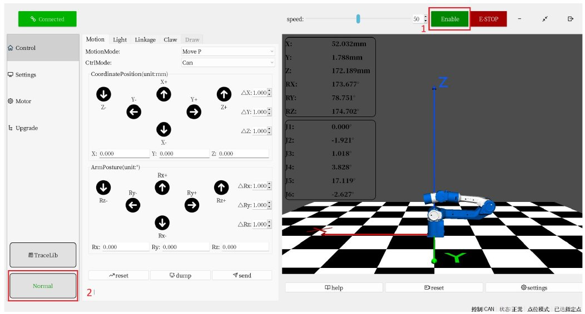
그림 12. Enable
관절 상태를 확인합니다.좌측 하단의 Normal에서 모터별 속도(RPM) · 각도 · 전압 · 전류 · 온도를 볼 수 있습니다.
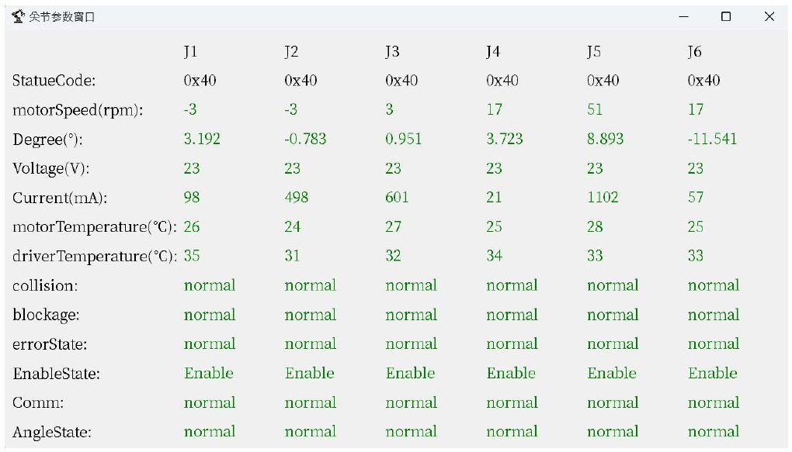
그림 13. 관절별 상세 정보
Reset으로 영점에 둡니다.누르기 전에 모드가 바뀌었는지, 그리퍼 방향이 맞는지 다시 확인합니다.
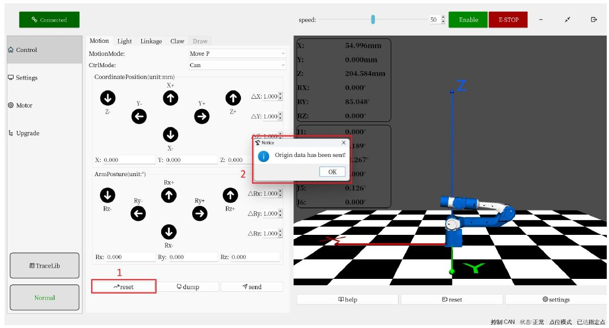
그림 14. Reset
네 가지 모션 명령
Motion 탭의 MotionMode에서 네 가지 모션 명령을 고르고, 속도를 비율(%)로 정합니다.
표 2. 모션 명령
명령
설명
MoveL (직선)
직선 경로로 이동합니다. 물체를 집거나 정밀하고 안정적인 작업에 씁니다.
MoveJ (관절)
각 관절을 제어해 목표 위치로 이동합니다.
MoveP (포인트)
가장 빠른 경로로 목표 위치에 도달합니다. 가장 많이 씁니다.
MoveC (원호)
곡선을 따라 부드럽게 이동합니다. 시작점 · 경유점 · 도착점 세 위치가 필요합니다.
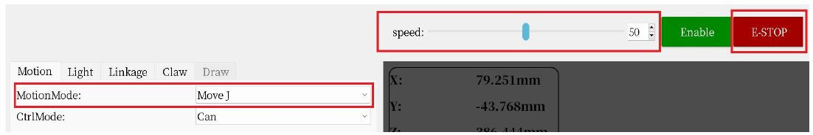
그림 15. MotionMode와 속도
주의 · 속도와 E-STOP
처음에는 속도 20을 권장합니다. 위급 상황에 대비해 마우스를 E-STOP 근처에 두십시오.
참고 · CtrlMode는 CAN
이 프로그램으로 제어할 때 CtrlMode는 반드시 CAN 모드여야 합니다. Teaching Mode로 궤적을 만들고 녹화했다면 PiPER가 Teaching Mode로 바뀌어 ArmRobotUA로 제어할 수 없습니다.
화면 상단의 E-STOP을 누른 뒤 Restore를 누르면 CtrlMode가 다시 CAN 모드로 바뀝니다.
예시 1 · MoveL (직선 운동)
Z축의 +를 누릅니다.또는 Edit에서 Z값을 250으로 정하고 Apply를 누릅니다.
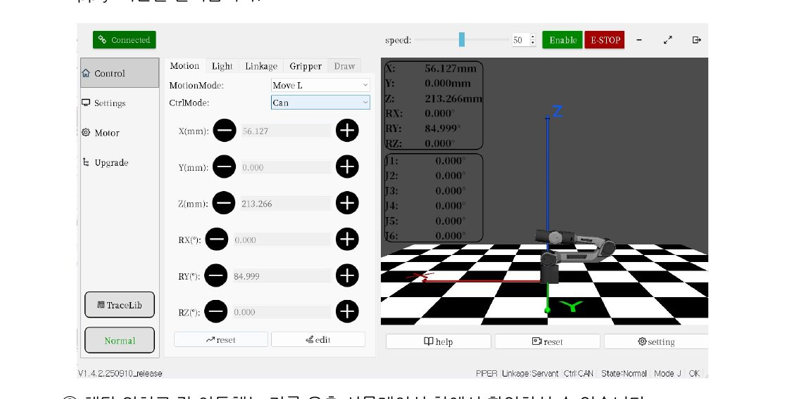
그림 16. MoveL로 Z값 바꾸기
이동을 확인합니다.우측 시뮬레이션 창에서 팔이 그 위치로 이동했는지 확인합니다.
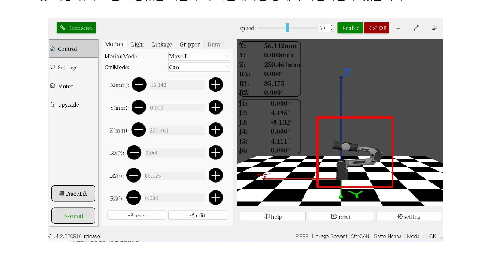
그림 17. 시뮬레이션 창에서 확인
예시 2 · MoveJ (관절 기반 운동)
J1(+) · J3(−) · J2(+) · J5(−) 순으로 관절 각도를 조절합니다.J3과 J5는 (−)가 영점 기준 위쪽이고, J2는 (+)가 위쪽이니 주의하십시오.
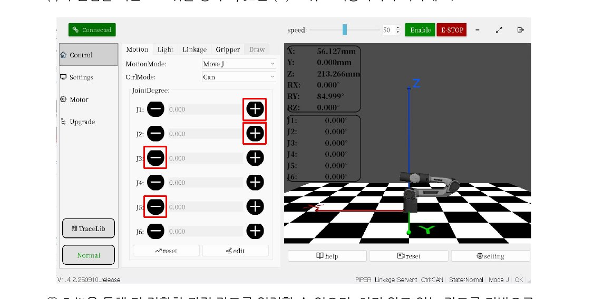
그림 18. MoveJ 관절 버튼
Edit으로 정확한 각도를 넣습니다.여섯 관절 값을 한 번에 넣어 동시에 그 각도로 움직일 수도 있습니다.
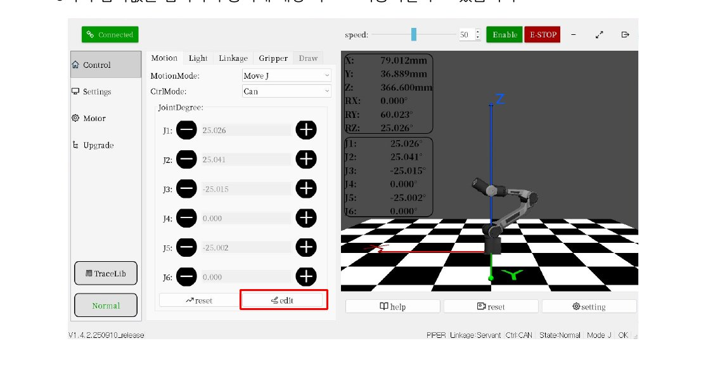
그림 19. 관절 각도 입력
예시 3 · MoveP (포인트 기반 운동)
위쪽 칸에서 Cartesian 좌표를 기준으로 위치를 조절합니다.우측 △는 버튼을 한 번 누를 때의 이동 단위(mm)로, 0.1 ~ 5 mm입니다. 처음에는 3 mm를 권장합니다.
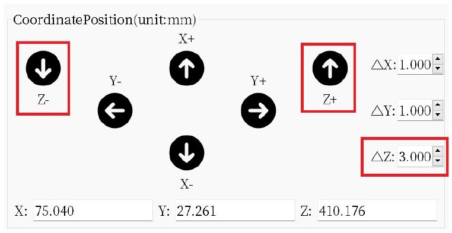
그림 20. 위치 조절과 이동 단위
아래쪽 칸에서 Euler 변환을 기준으로 회전 각도를 조절합니다.여기서는 Ry 값을 바꿔 봅니다. 우측 △는 한 번에 도는 각도로, 0.1° ~ 5°입니다. 처음에는 0.1°를 권장합니다.
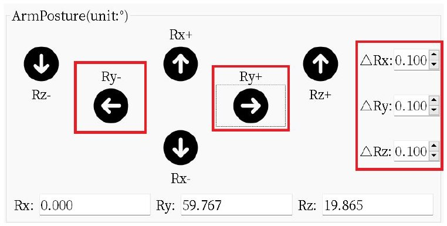
그림 21. 회전 조절과 단위 각도
여러 값을 한 번에 보냅니다.X · Y · Z · RX · RY · RZ를 모두 바꾸고 send로 동시에 입력합니다. dump는 현재 위치를 가져옵니다.
예시 4 · MoveC (곡선 운동)
곡선 운동에는 시작점 · 경유점 · 도착점이 필요하며, 각 위치는 dump로 넣습니다.
reset으로 영점에 둡니다.MoveJ와 MoveL로 목표 위치를 정합니다.
시작점을 넣습니다.MoveL로 Z를 300으로 맞춘 뒤 MoveC에서 dump를 누릅니다.
경유점을 넣습니다.MoveL로 팔을 Y 30, Z 350에 둔 뒤 MoveC의 Point를 midpoint로 바꾸고 dump를 누릅니다.
도착점을 넣습니다.MoveL로 팔을 Y 0, Z 400에 둔 뒤 end point로 바꾸고 dump를 누릅니다.
실행합니다.속도를 40으로 맞추고 draw an arc를 누릅니다.
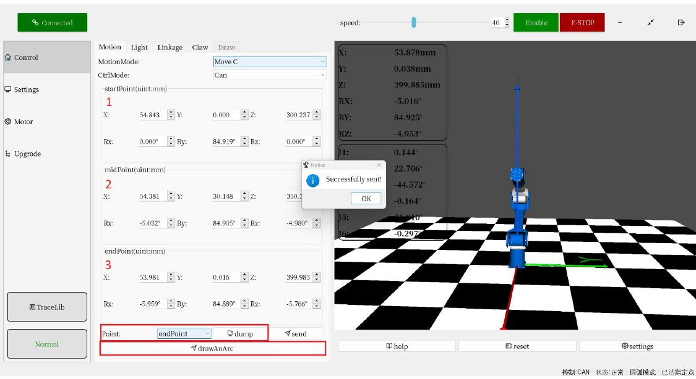
그림 22. MoveC 세 점과 실행
궤적 라이브러리 (Tracelib)
네 가지 모션 명령을 조합해 동작을 만들 수 있습니다. Tracelib에서 모션 명령, 위치와 회전 각도, 관절 각도, 속도와 휴식 시간을 정해 동작을 만들고, 저장하거나 불러옵니다.
마우스 오른쪽 버튼의 Move/Insert/Modify/Copy/Paste/Delete로 더 쉽게 편집할 수 있습니다.
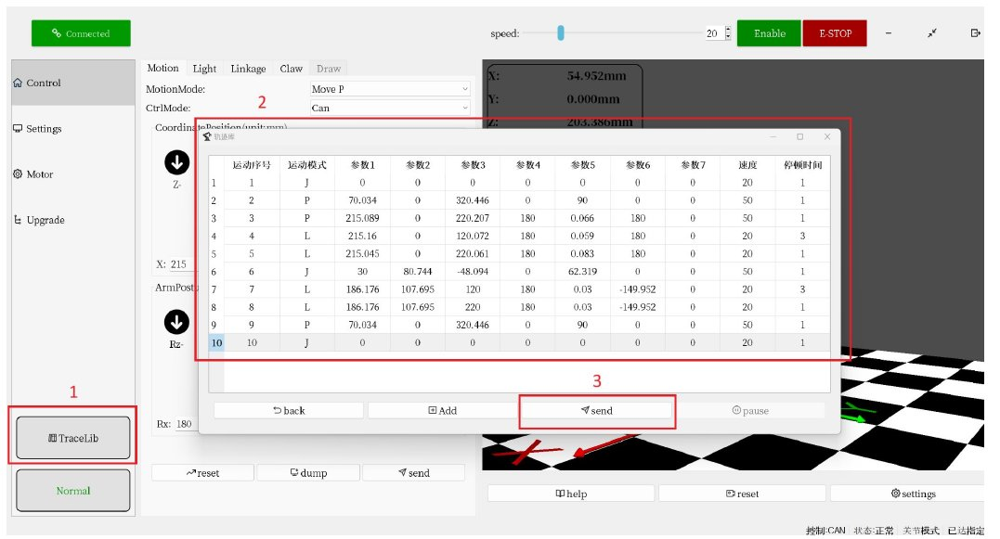
그림 23. Tracelib
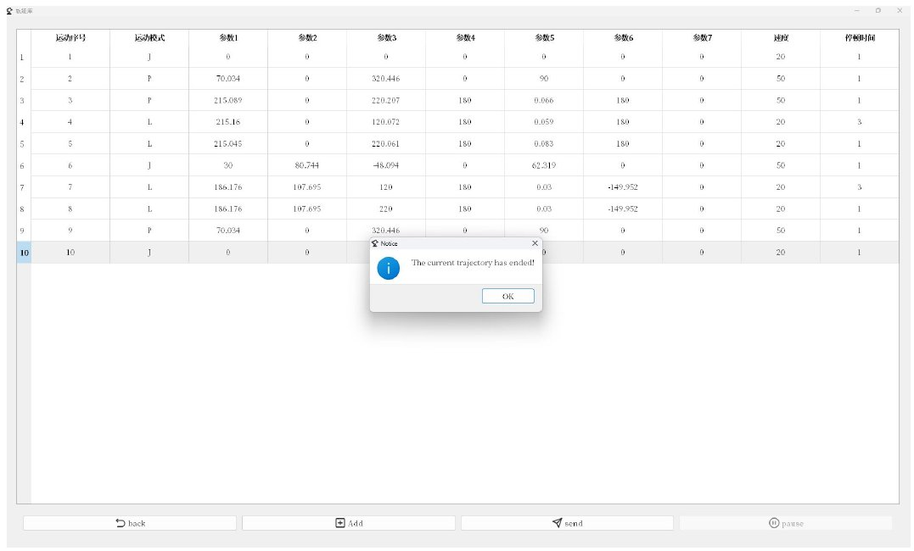
그림 24. Tracelib 편집 메뉴
안전하게 종료하기
reset으로 영점에 둡니다.
E-STOP으로 멈춥니다.이때 그리퍼 부분을 손으로 받치면 긁힘을 막을 수 있습니다. 이후 로봇팔은 저절로 Disable 상태가 됩니다.
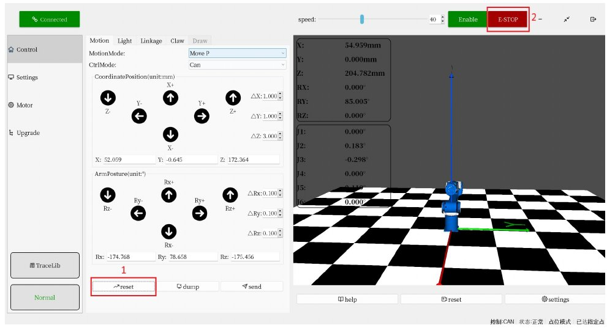
그림 25. E-STOP으로 종료
통신을 끊고 전원을 끕니다.ArmComm → Disconnect로 통신을 끝낸 뒤 전원을 차단합니다.
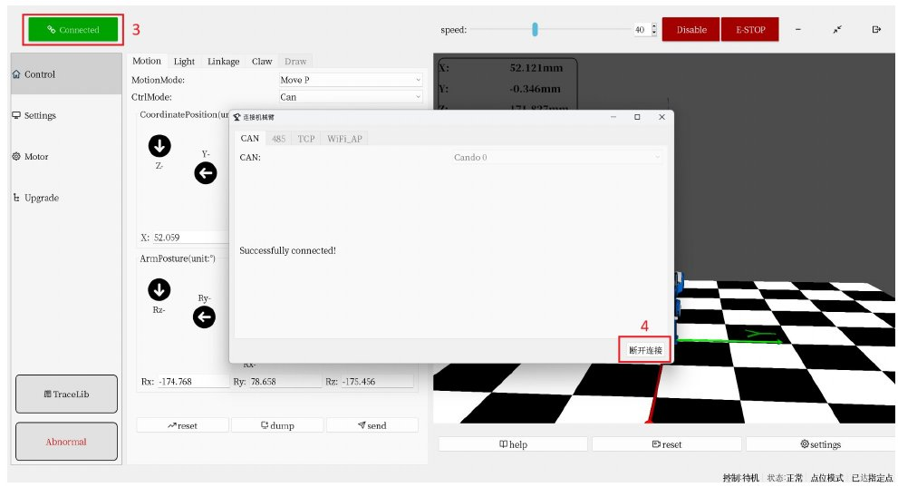
그림 26. ArmComm → Disconnect
로봇팔 모드 바꾸기 (Master · Servant)
E-STOP을 눌러 E-STOP 상태로 둡니다.
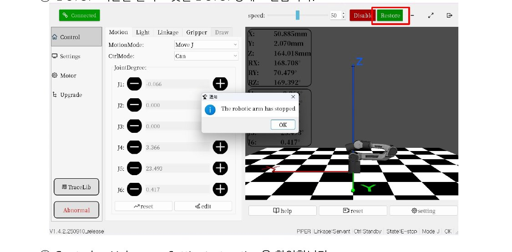
그림 27. E-STOP 상태
Control → Linkage → SettingInstruction을 엽니다.
Master Mode: 티칭 그리퍼를 달고 Slave Mode PiPER와 텔레오퍼레이션으로 연결할 때 씁니다. CAN 데이터를 보내기만 하고 거의 받지 않으므로, Teaching Mode를 쓸 수 없고 ArmRobotUA에서 관절 · 자세 값을 볼 수 없습니다.
Servant Mode: PiPER의 기본 모드로, 제어를 받는 모드입니다.
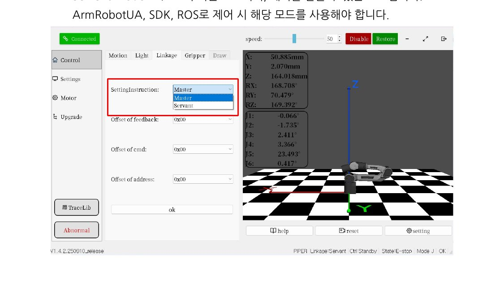
그림 28. SettingInstruction
Restore로 초기화합니다.Master Mode에서는 잠깐 토크가 풀렸다가 다시 들어와 손으로 움직일 수 있고, Slave Mode에서는 Disable 상태가 됩니다.
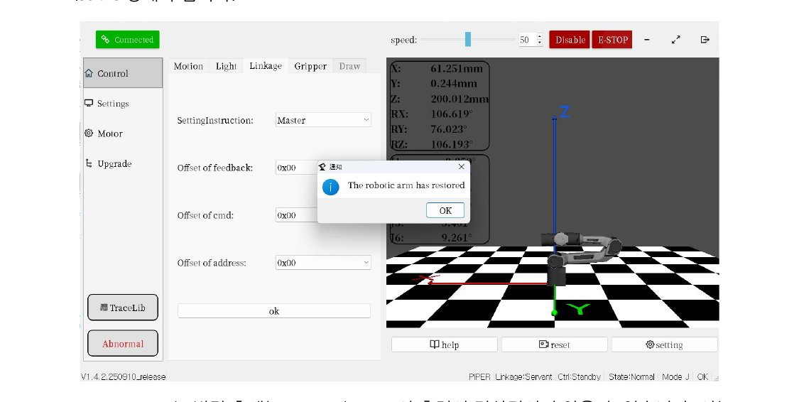
그림 29. 모드 변경 후 Restore
참고 · Master Mode의 출력
Master Mode로 바꾼 뒤에는 ArmRobotUA의 출력이 정상적이지 않을 수 있습니다. Master Mode의 특성입니다. 모드를 바꾼 뒤 Disconnect로 연결을 끊고 쓰십시오.
CHAPTER04
텔레오퍼레이션
Master Mode인 티칭 그리퍼 PiPER와 Slave Mode인 2-Finger 그리퍼 PiPER를 연결하면, Slave가 Master의 움직임을 따라 하는 텔레오퍼레이션을 할 수 있습니다.
2 to 4 커넥터를 준비합니다.티칭 그리퍼 PiPER에 함께 들어 있습니다.
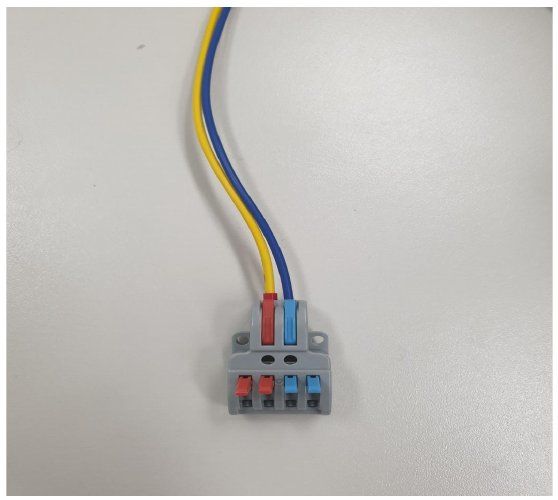
그림 30. 2 to 4 커넥터
CAN 케이블을 뺍니다.각 PiPER의 USB-to-CAN 모듈에 연결된 CAN 통신 케이블을 분리합니다.
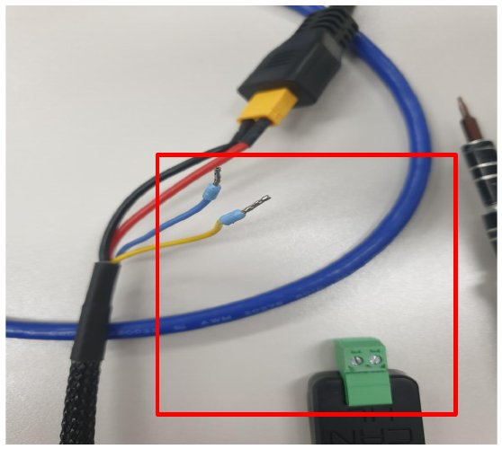
그림 31. USB-to-CAN 모듈의 CAN 케이블
2 to 4 커넥터에 CAN 케이블 네 가닥을 연결합니다.CAN High(노란색 선)는 빨간 커넥터, CAN Low(파란색 선)는 파란 커넥터에 연결합니다.
커넥터의 출력 케이블은 사진처럼 USB-to-CAN 모듈에 연결하며, 여기서도 노란색 선이 CAN High, 파란색 선이 CAN Low입니다.
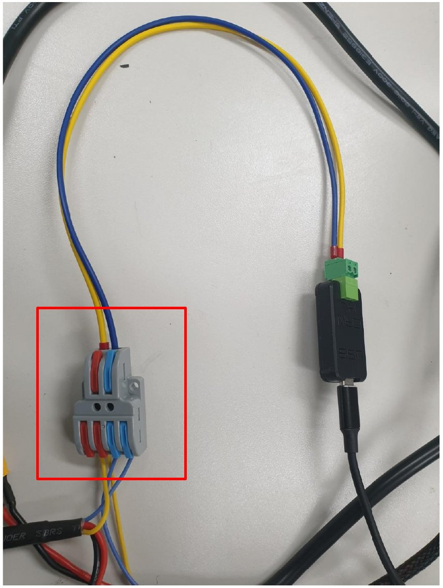
그림 32. 2 to 4 커넥터 배선
참고 · PC 연결
텔레오퍼레이션만 필요하면 USB-to-CAN 모듈을 PC에 연결하지 않아도 됩니다. 모듈을 PC에 연결하면 텔레오퍼레이션 중인 PiPER의 관절 · 자세 값을 볼 수 있습니다.
CHAPTER05
캘리브레이션
PiPER 로봇팔에는 각 모터의 영점 위치가 표시되어 있습니다. 모터 영점을 이 위치에 맞추는 과정을 캘리브레이션이라고 합니다.
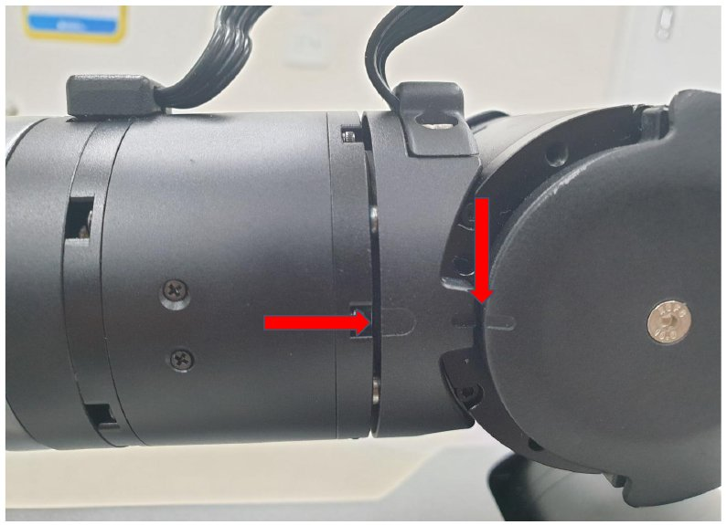
그림 33. 관절의 영점 표시
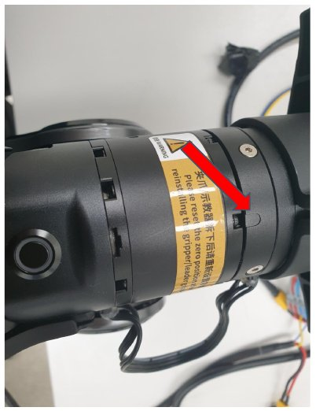
그림 34. 관절의 영점 표시
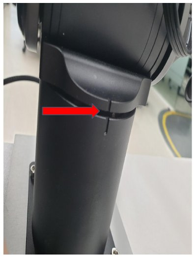
그림 35. 관절의 영점 표시
관절 모터
ArmRobotUA의 Motor 탭을 엽니다.
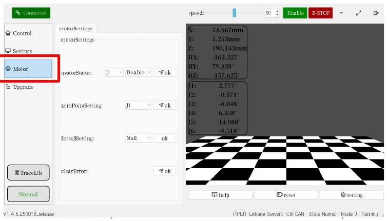
그림 36. Motor 탭
영점을 맞출 모터를 Disable합니다.
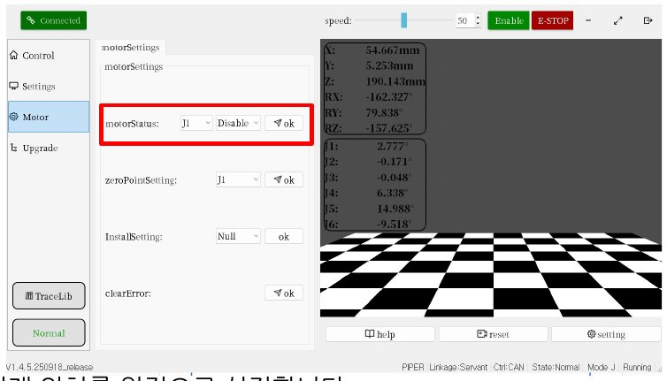
그림 37. 모터 Disable
모터를 영점 표시에 맞추고 영점으로 설정합니다.
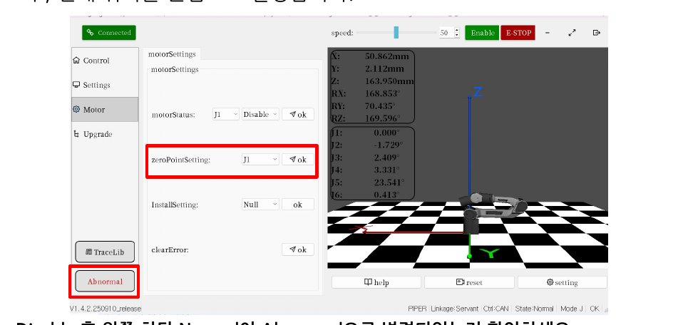
그림 38. 영점 설정
모터를 다시 Enable하고 설정이 바뀌었는지 확인합니다.
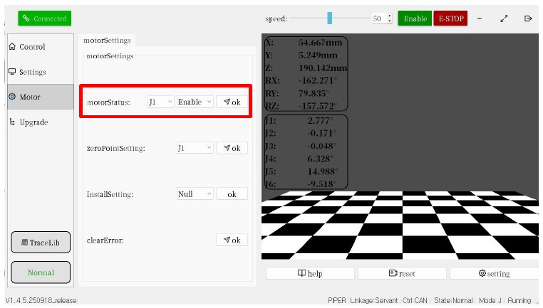
그림 39. Enable 후 확인
경고 · J5 캘리브레이션
J5 모터를 Disable하면 토크가 풀려 팔이 부딪칠 수 있습니다. 모터가 부딪치지 않게 받친 뒤 캘리브레이션하십시오.
참고 · Servant Mode에서만
캘리브레이션은 Servant Mode에서만 할 수 있습니다. Master Mode라면 먼저 모드를 바꾸십시오 (3장).
하단의 BeZero → OK로 영점을 설정합니다.상단의 Spacing 값이 0에 가까운지 확인하고, 그리퍼 동작을 확인한 뒤 마칩니다.
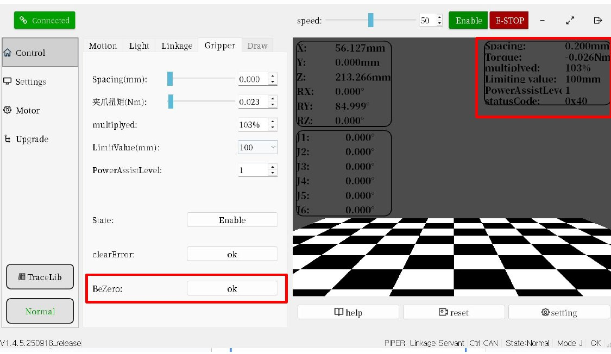
그림 42. BeZero와 Spacing 값
CHAPTER06
영점 학습
펌웨어를 1.8.1 또는 1.8.2로 올리면 PiPER에 영점을 학습시켜야 합니다. 이 과정으로 데이터 수집 · 재생의 일관성 문제와, 전원을 다시 켠 뒤 영점 위치의 정확도가 떨어지는 문제를 해결합니다.
주의 · 펌웨어 버전이 다른 팔끼리 연결
1.X.X 버전과 2.0.0 이상 버전을 텔레오퍼레이션으로 연결하면 동작이 불안정하거나 튈 수 있습니다. 사용 중인 1.X.X 기기를 1.8.2로 업데이트하면 최신 기기(2.0.0 이상)와 문제없이 연결해 쓸 수 있습니다.
2.0.0 이상으로 올리려면 모터를 분해 · 조립해야 해서 제조사로 보내야 하므로, 1.8.2로 업데이트합니다.
이 버전에서는 J1 · J2 · J3이 영점 근처에 있을 때 전원을 켜야 합니다. J1 베이스는 슬롯에 맞추고, J2와 J3은 Disable 상태로 자연스럽게 아래로 늘어뜨립니다.
펌웨어를 1.8.2로 올립니다.PiPER 팔 펌웨어는 노드 15번을 선택해 올립니다. 자세한 순서는 영상 "Firmware Upgrade.mp4"를 참고하십시오.
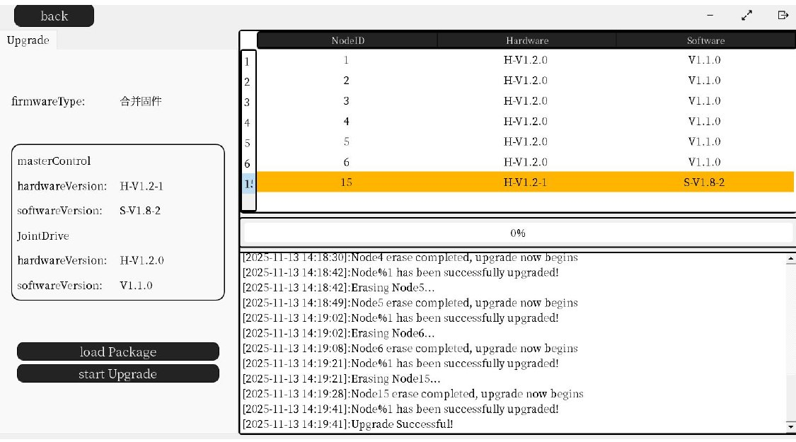
그림 43. Upgrade 탭, 노드 15
그리퍼나 티칭 그리퍼를 떼어 냅니다.
모터가 영점 위치를 학습하게 합니다.이 작업은 펌웨어를 올렸거나 로봇팔이 영점을 비정상적으로 다시 잡을 때만 합니다.
CPV 모드에 들어갑니다.메인 화면의 모션 제어에서 CPV를 고르고 비밀번호 agx123을 넣습니다 (AgileX 기술 지원 문서에 공개된 값: kb.agilex.ai 「PIPER系列某个/某些关节无法使能解决方法」).
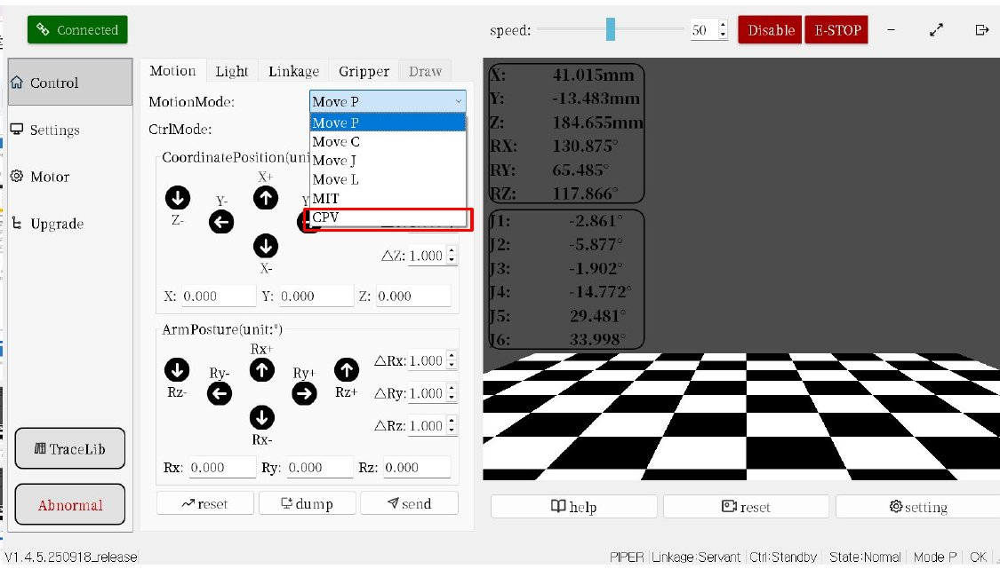
그림 44. CPV 선택
CPV 파라미터 → "교정 영점 설정"을 고릅니다.
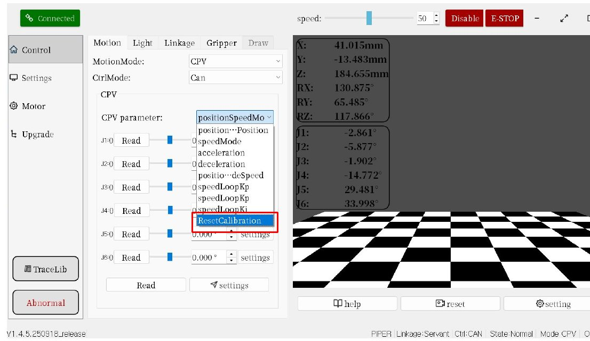
그림 45. 교정 영점 설정
J5를 들어 올려 오른쪽으로 돌린 뒤 팔을 사진의 자세에 둡니다.
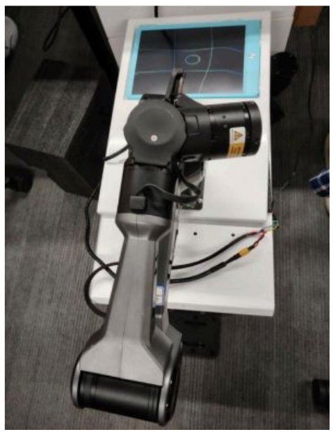
그림 46. 영점 학습 자세
Setting을 누릅니다.J4와 J5가 천천히 돌아 각도를 맞춘 뒤 원위치로 돌아갑니다 (영상 "영점 위치 학습" 참고).
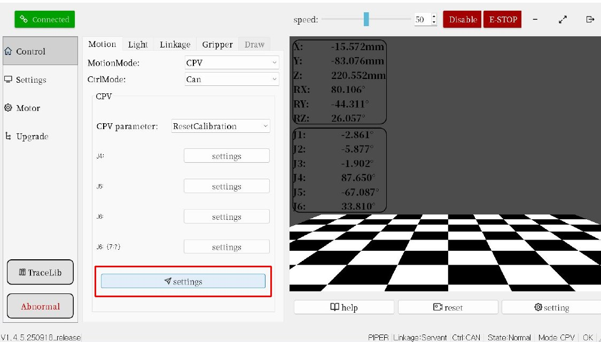
그림 47. Setting
학습이 끝나면 팔이 저절로 멈춥니다.이것으로 영점 학습이 끝납니다.
영점 위치를 설정합니다.먼저 Motor 탭으로 들어갑니다.
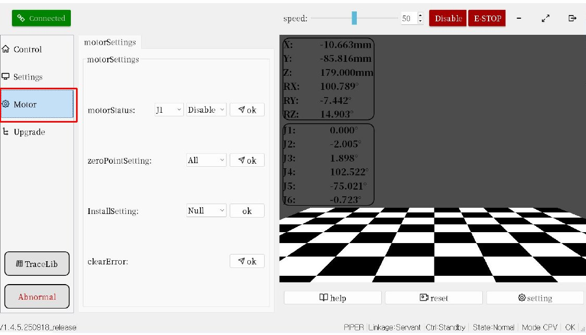
그림 48. Motor 탭
J5를 들어 올려 왼쪽으로 돌립니다.베이스 눈금선을 J6 플랜지 눈금선에 맞춥니다.
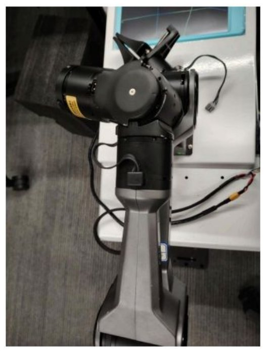
그림 49. 눈금선 맞춤
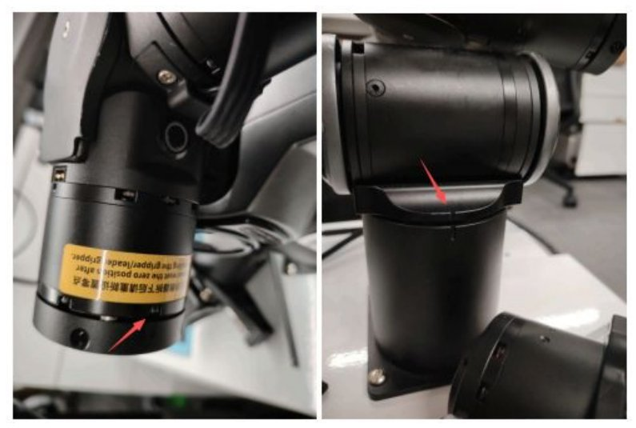
그림 50. 눈금선 맞춤 (가까이)
모든 관절을 고르고 영점을 설정합니다.이때 J2 피드백은 약 −2°, J3 피드백은 약 2°입니다.
그림 51. 전체 관절 영점 설정
팔을 활성화하고 Move J로 재설정합니다.팔 자세가 Init Pose와 같은지 확인합니다.
그림 52. Move J와 Init Pose
그리퍼 펌웨어를 올립니다.그리퍼를 연결하면 Upgrade 탭에 Node 7이 보입니다. Node 7을 고르고 JXB2_DRVV1.1.0 파일로 같은 방법으로 올리면 모든 과정이 끝납니다.
그림 53. Node 7 그리퍼 펌웨어
자주 묻는 질문
증상
조치
영점으로 돌아간 뒤 관절에서 큰 소음과 진동이 납니다.
3단계 '모터 영점 학습'이 실패한 것입니다. 3 · 4단계를 다시 해서 영점을 다시 학습하고 재설정하십시오.
전원을 넣고 Move J로 영점에 돌아갈 때 J1이 조금 어긋납니다.
J1과 J2의 슬롯이 베이스 슬롯에 정확히 맞은 상태에서 전원이 들어갔는지 확인하십시오. 그 자세에서 전원을 다시 넣고 Move J로 영점에 돌아가 나아졌는지 확인하십시오.
CHAPTER07
Python SDK
Python SDK를 쓰면 PC에서 CAN 인터페이스로 PiPER에 더 구체적인 명령을 원하는 대로 만들어 보낼 수 있습니다. CAN 연결, 종단 저항, 처음 전원 넣기는 PiPER 운용 설명서 3 · 6장을, CAN 프로토콜 자료는 같은 책 9장을 보십시오.
자세한 내용은 github.com/agilexrobotics/piper_sdk와 그 안의 Interface · Protocol · Msgs README를 참고하십시오.
PiPER Workspace를 받습니다.두 가지 중 하나를 고릅니다. 이 가이드의 명령과 예제(7 ~ 10장)는 A를 기준으로 합니다.
A. WeGo 배포본 (이전 SDK, 이 가이드 기준) piper_sdk 0.2.17, ROS 2 패키지, MoveIt2, 예제 스크립트와 원클릭 설치 파일이 들어 있습니다. 연구 기간 내내 같은 함수를 써야 하면 이 배포본을 쓰십시오. gdown을 설치하고 Workspace를 내려받은 뒤 압축을 풀고 폴더로 이동합니다.
B. AgileX GitHub 최신판 AgileX가 계속 고치는 최신 SDK와 ROS 2 패키지입니다. 함수 이름과 예제 위치가 A와 다를 수 있으므로(예: 펌웨어 1.8-8 이후는 C_PiperInterface_V3), 이 가이드의 예제 대신 각 저장소의 README를 따르십시오. 문서
USB 주소는 실제로 확인한 값을 쓰십시오. 기본 이름 can0이 지정한 이름(can_piper)으로 바뀝니다.
그림 56. USB 주소와 이름을 지정한 설정
CAN 설정을 확인합니다.
ifconfig
그림 57. ifconfig의 CAN 인터페이스
CAN 버스의 데이터 프레임을 실시간으로 봅니다 (can_piper로 지정했으면 candump can_piper).
candump can0
그림 58. candump 출력
VS Code로 예제를 엽니다.
cd src/piper_sdk/scripts
code .
그림 59. VS Code의 예제 코드
예제
PiPER SDK로 자세한 정보를 읽고, 피드백 값을 바꾸고, PiPER를 제어하는 명령을 보낼 수 있습니다.
참고 · CAN 포트 이름
예제의 CAN 포트가 can0이 아니면 C_PiperInterface("can_piper")처럼 포트 이름을 바꿔야 합니다.
PiPER 정보 읽기
cd piper_ws/src/piper_sdk/scripts
python3 "0-1. piper_arm_info.py"
#!/usr/bin/env python3
# -*-coding:utf8-*-
"""
PiPER에 관한 대부분의 피드백을 이 파일에서 확인할 수 있습니다.
한 개씩 주석을 해제하며 차근차근 확인하십시오.
"""
from typing import Optional
import time, math
from piper_sdk import *
if __name__ == "__main__":
piper = C_PiperInterface()
piper.ConnectPort()
while True:
# # [1] PiPER 슬레이브암 관련 피드백 받는 함수
# print(piper.GetArmStatus())
# print(piper.GetArmEndPoseMsgs())
# print(piper.GetArmJointMsgs())
# print(piper.GetArmGripperMsgs())
# print(piper.GetArmHighSpdInfoMsgs())
# print(piper.GetArmLowSpdInfoMsgs())
# print(piper.GetCurrentEndVelAndAccParam())
# print(piper.GetCrashProtectionLevelFeedback())
# # PiPER 특정 모터의 피드백 받는 함수
# piper.SearchMotorMaxAngleSpdAccLimit(1, 0x05)
# print(piper.GetCurrentMotorMaxAccLimit())
# print(piper.GetCurrentMotorAngleLimitMaxVel())
# # PiPER 전체 모터의 피드백 받는 함수
# piper.SearchAllMotorMaxAngleSpd()
# print(piper.GetAllMotorAngleLimitMaxSpd())
# piper.SearchAllMotorMaxAccLimit()
# print(piper.GetAllMotorMaxAccLimit())
# # [2] PiPER 마스터암 관련 피드백 받는 함수
# print(piper.GetArmJointCtrl())
# print(piper.GetArmGripperCtrl())
# print(piper.GetArmCtrlCode151())
# # [3] PiPER 기타 피드백 받는 함수
# PiPER Forward Kinematics 피드백 받는 함수
# print(f"feedback:{piper.GetFK('feedback')}")
# print(f"control:{piper.GetFK('control')}")
# CAN 통신 FPS 피드백 받는 함수
# print(f"can: {piper.GetCanFps()}")
# print(f"status: {piper.GetArmStatus().Hz}")
# print(f"end_pose: {piper.GetArmEndPoseMsgs().Hz}")
# print(f"joint_states: {piper.GetArmJointMsgs().Hz}")
# print(f"gripper_msg: {piper.GetArmGripperMsgs().Hz}")
# print(f"high_spd: {piper.GetArmHighSpdInfoMsgs().Hz}")
# print(f"low_spd: {piper.GetArmLowSpdInfoMsgs().Hz}")
# print(f"joint_ctrl: {piper.GetArmJointCtrl().Hz}")
# print(f"gripper_ctrl: {piper.GetArmGripperCtrl().Hz}")
# print(f"ctrl_151: {piper.GetArmCtrlCode151().Hz}")
time.sleep(0.005)
스크립트 안의 주석을 지우고 실행하면 로봇팔 상태, 모터 6개의 각도, 그리퍼 상태 같은 정보를 볼 수 있습니다.
관절 제어
python3 "1-1. piper_MoveJ.py"
#!/usr/bin/env python3
# -*-coding:utf8-*-
from typing import Optional
import time, math
from piper_sdk import *
from piper_sdk.interface.piper_interface_v2 import C_PiperInterface_V2
class Move_J:
def __init__(self, piper: C_PiperInterface_V2):
self.piper = piper # piper 인터페이스 객체
self.factor = 1000 # 0.001도 단위 int로 보내므로 단위 변환용
self.position = [0, 0, 0, 0, 0, 0, 0] # 초기 위치 (각 관절)
self.gripper = 0 # 초기 위치 (그리퍼)
self.count = 0 # 이동 횟수 카운트
def enable(self):
"""로봇팔을 활성화하고, 모터가 준비될 때까지 기다립니다."""
enable_flag = False # 팔이 활성화되었는지
elapsed_time_flag = False # 시간 초과 여부
timeout = 5 # 타임아웃 (초)
start_time = time.time()
while not enable_flag: # 팔이 활성화될 때까지 반복
elapsed_time = time.time() - start_time
enable_flag = all( # 모든 모터가 활성화되었는지 확인
getattr(self.piper.GetArmLowSpdInfoMsgs(), f"motor_{i}").foc_status.driver_enable_status
for i in range(1, 7)
)
self.piper.EnableArm(7) # 로봇팔 활성화
self.piper.GripperCtrl(0, 1000, 0x01, 0) # 그리퍼 활성화 (초기 상태)
if elapsed_time > timeout:
print("시간초과")
elapsed_time_flag = True
enable_flag = True
break
time.sleep(1) # 1초 간격으로 확인
if elapsed_time_flag:
print("프로그램을 종료합니다")
exit(0)
def convert(self):
return [round(angle * self.factor) for angle in self.position] + [round(self.gripper * self.factor)]
def move(self):
while True:
print(self.piper.GetArmJointMsgs()) # 현재 관절 각도 출력
self.count += 1
print(self.count)
# 관절별로 45도씩 움직이는 예제
if self.count == 1:
print("원점")
self.position = [0, 0, 0, 0, 0, 0]; self.gripper = 0
elif self.count == 200:
print("웨이포인트 1")
self.position = [45, 0, 0, 0, 0, 0]; self.gripper = 0
elif self.count == 400:
print("웨이포인트 2")
self.position = [0, 45, 0, 0, 0, 0]; self.gripper = 0
elif self.count == 600:
print("웨이포인트 3")
self.position = [0, 0, -45, 0, 0, 0]; self.gripper = 0
elif self.count == 800:
print("웨이포인트 4")
self.position = [0, 0, 0, 45, 0, 0]; self.gripper = 0
elif self.count == 1000:
print("웨이포인트 5")
self.position = [0, 0, 0, 0, -45, 0]; self.gripper = 0
elif self.count == 1200:
print("웨이포인트 6")
self.position = [0, 0, 0, 0, 0, 45]; self.gripper = 0
elif self.count == 1400:
print("웨이포인트 7")
self.position = [0, 0, 0, 0, 0, 0]; self.gripper = 70
elif self.count == 1600:
print("웨이포인트 8")
self.position = [45, 45, -45, 45, -45, 45]; self.gripper = 0
elif self.count == 1800:
self.count = 0 # 카운트 초기화
converted_values = self.convert() # 변환된 값 적용
joint_values = converted_values[:6] # 처음 6개는 관절 값
gripper_value = converted_values[6] # 마지막 값은 그리퍼
self.piper.MotionCtrl_2(0x01, 0x01, 50, 0x00) # 모션 제어 (속도, 제어 모드)
self.piper.JointCtrl(*joint_values) # 관절 제어
self.piper.GripperCtrl(abs(gripper_value), 1000, 0x01, 0) # 그리퍼 제어
time.sleep(0.005) # 5 ms 대기
def main():
piper = C_PiperInterface("can0") # piper 인터페이스 생성
piper.ConnectPort()
move_j = Move_J(piper)
move_j.enable()
move_j.move()
if __name__ == "__main__":
main()
실행하면 count 값에 따라 관절이 45°씩 움직이고, 그리퍼가 열리고 닫힙니다. 각도는 도(degree) 단위입니다.
비상 정지와 복구
PiPER를 급히 멈추거나 작동을 끝낼 때 아래 스크립트를 실행합니다 (VS Code에서 실행해도 됩니다). PiPER가 멈춘 뒤 비상 정지 동작으로 천천히 내려갑니다.
cd piper_ws/src/piper_sdk/scripts
python3 "0-2. piper_emergency_stop.py"
그림 60. VS Code에서 비상 정지 스크립트 실행
Python Interpreter 오류가 나면 Python 3.10 인터프리터를 고르십시오.
그림 61. Python Interpreter 오류그림 62. Python 3.10 선택
비상 정지 상태의 PiPER를 다시 쓰려면 아래 스크립트로 초기화합니다.
python3 "0-3. piper_emergency_restore.py"
그림 63. emergency_restore 실행
경고 · 비상 정지 없이 끄거나 복구하지 마십시오
비상 정지 스크립트를 실행하지 않고 전원을 끄거나 emergency_restore 스크립트를 실행하면 PiPER가 빠른 속도로 하강해 제품이 파손될 수 있습니다.
CHAPTER08
ROS1
PiPER ROS 패키지는 PiPER SDK를 바탕으로 만들었으며, 데이터를 읽고 보내는 사용자 정의 ROS 메시지가 들어 있습니다. Ubuntu 20.04와 ROS Noetic에서 씁니다. PiPER Python SDK와 ROS가 먼저 설치되어 있어야 합니다.
패키지 설치
mkdir -p ~/piper_ros_ws/src && cd ~/piper_ros_ws/src
git clone https://github.com/agilexrobotics/piper_ros.git
cd ..
catkin_make
빌드가 끝나면 launch 파일로 PiPER 제어 노드를 실행할 수 있습니다. launch 파일을 실행하기 전에 CAN 통신을 활성화하십시오 (7장).
position · velocity · effort의 7번째 값이 0이 아니므로, 이 메시지는 그리퍼를 엽니다. 다른 관절도 같은 방식으로 움직입니다.
참고 · 토픽 제어가 안 될 때
CAN 장치를 활성화하고 전송 속도를 맞게 설정해야 로봇팔 상태를 읽고 로봇팔을 제어할 수 있습니다.
Enable Status: False 또는 <class 'can.exceptions.CanError'> Message NOT sent가 보이면 PiPER가 CAN 모듈에 연결되지 않은 것입니다. USB를 뺐다 꽂고 PiPER를 다시 켠 뒤, CAN 모듈을 활성화하고 노드를 다시 실행하십시오.
자동 활성화가 켜진 상태에서 5초 안에 활성화되지 않으면 프로그램이 저절로 끝납니다.
엔드 이펙터 자세 제어에는 사용자 정의 메시지 PoseCmd.msg를 쓰십시오.
일부 특이 자세에는 도달하지 못할 수 있습니다.
Gazebo 시뮬레이션
Gazebo는 로봇의 동작과 센서를 3D 물리 시뮬레이션에서 시험하는 오픈 소스 소프트웨어입니다.
2026-11-17에 확인한 piper_ros noetic 브랜치에는 piper_description의 gazebo_xacro.launch가 없고, Gazebo 실행 파일이
piper_gazebo 패키지(launch/piper_with_gripper/piper_gazebo.launch)에 있습니다. 위 명령이 파일을 찾지 못하면 그 패키지의 launch 파일을 쓰고,
아래 토픽 이름도 그 패키지에서 확인하십시오.
여기서도 ROS 토픽으로 로봇팔을 움직일 수 있습니다. 아래 명령은 관절 1을 90° 돌립니다. 값은 도가 아닌 라디안으로 넣고, 그리퍼인 7 · 8번 관절은 미터 단위로 넣습니다.